|
| Soluce
Goldeneye : Control |
|
| Soluce
Goldeneye : Control |
J'adore ce Niveau. Pleins de Trucs différents à faire (Protection, Explosion, Corps-à-Corps, Furtif...) et une Architecture super bien-pensée. Un TRES bon Niveau. Vu que l'Objectif de Natalya est plus loin dans la Mission, commençons tranquillement... Sortez de l'Ascenseur, et gaffe aux Drone Guns (y en a pas en Agent). tuez les Gardes, et n'en oubliez aucun sinon Natalya ne sortira pas de l'Ascenseur. |


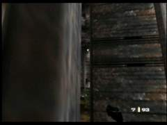
Le 1er Drone Gun est le plus dur. Placez-vous bien contre le Mur et shootez dès que vous voyez un millimetre du Canon (je sais c'est flou). Pour le 2eme, mettez-vous comme sur la Photo 3 et en tirant bien vous arriverez à la Photo 4. Le 3eme et Dernier Drone est le plus simple. Avancez doucement, et vous le verrez bien. Tirez dessus comme un forcené et le tour est joué. Allez chercher Natalya... |
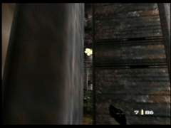 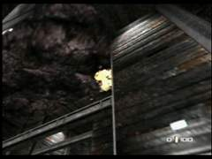 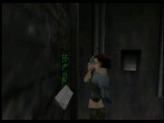
Continuez votre Chemin. Natalya va vous ouvrir une Porte dans le coté Opposé de la Salle, et vous arriverez dans un Long Couloir. Attention aux Gardes au fond. Il y a une Caisse de Remote Mines avec eux. Il se peut que les autres Gardes près des Caisses Grises vous égratignent... |
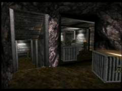

Ce qui est marrant, c'est que les Gardes (ceux des Caisses Grises) balanceront des Grenades et dans 90% des cas, ils feront tout peter entre eux ! Attendez, ecoutez bien si ils en balancent d'autres, et chopez les Gardes uns par uns. C'est le Passage ou vous risquez de perdre le plus de Vie, alors on se calme ! En continuant, vous arrivez dans une Salle avec une sorte de Réacteur au centre. Prenez l'Escalier, continuez, tuez les Gardes, et vous tomberez sur Boris. Il va lacher son PP7, mais ne le tuez pas, sinon Natalya refusera de faire sont travail ! Si vous le laissez filer, et le suivez, il vous conduira a une piece avec un Gilet ! |
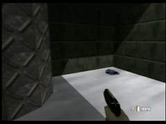

| Détruire
les Ordinateurs : Tous NIveaux |
Y en a 4 dans la Salle de Controle (2 au RDC, 2 à l'etage). Ensuite, y en a un dans la Salle avec les Drone Guns, et un autre qu'on ne peut détruire que lorsque Natalya a fini son Boulot. Passez au 4eme Terminal, puis allez à la Salle des Drone Guns (2 en Agent, 4 en Secret ou 00 Agent) et explosez le 5eme. Une fois les Terminaux détruits, allez chercher Natalya à la Porte près d'un des Terminaux de la Salle Principale, à l'étage... Natalya va tripatouiller l'ordinateur. |
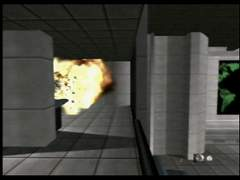 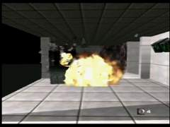 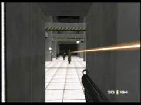 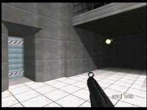 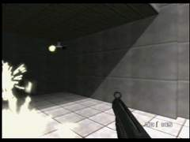


| Proteger
Natalya : Tous NIveaux |
C'est là que çà se corse. Bienvenue dans un des Objectifs les plus difficiles de TOUT le Jeu. Pendant que Natlay s'affaire, il faut buter les Gardes qui arrivent par lesEescaliers, et faire attention à ceux qui briseront les Vitres !!! Regardez bien à Droite et à Gauche souvent pour voir les Gardes arriver. Voilà. Baleze. Ci-dessous au Milieu et à Droite, les 2 Vitres qui vont etre bientot brisées... |
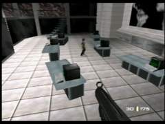 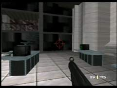 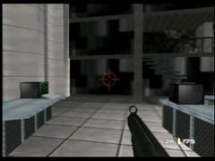
Tuez bien les Gardes de loin. Si vous avez assez de munitions, ne perdez pas de temps à ramasser celles des Gardes morts. Restez bien ENTRE Natalya et les Gardes (Ligne de Mire) pour qu'elle ne se fasse pas abattre dans le dos. Certains Gardes vous ignorerons et iront droit sur elle ! Enfin, quand Natalya a fini, elle va s'en aller. Verifiez bien qu'elle ne rencontre pas de Garde sur son chemin, et dirigez-vous vers la Porte Blindée Grise de la Photo ci-dessous au Milieu. Dans la Salle suivante, posez une Mine sur la Vitre et Boum ! L'Objectif des Terminaux sera rempli ! Maintenant, ressortez de cette Salle si vous voulez alez chercher un Gilet Pare-Balles ! |


Si vous ressortez et continuez vers l'autre Porte, vous serez dans une autre partie, avec des Casiers sur la Droite. Il y a un Gilet derriere, si vous voulez. Continuez plus loin et vous arriverez dans une Grande Salle avec une grue. Prenez l'Ascenseur devant vous et la Mission est finie ! |


Voici ci-dessous l'Ascenseur. Y en a un 2eme, mais on ne peut le prendre, because c'est Trevelyan qui est dedans. De toute façon, il vous claque la porte au nez. |
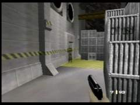